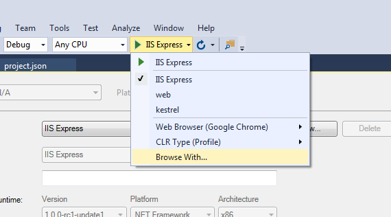

-
ASP.NET Core: launchSettings.json
launchSettings.json is generated by "dotnet new api". This file defines a list of "profiles". Each profile instructs a way
(a host) to start the application and corresponding environment varaibles. ** Environment variables can be defined here. **
"profiles": {
"IIS Express": {
"commandName": "IISExpress",
"launchBrowser": true,
"launchUrl": "api/values",
"environmentVariables": {
"ASPNETCORE_ENVIRONMENT": "Production"
}
},
"kestrel": {
"commandName": "Project",
"launchBrowser": true,
"launchUrl": "api/values",
"applicationUrl": "https://localhost:5001;http://localhost:5000",
"environmentVariables": {
"ASPNETCORE_ENVIRONMENT": "Production",
"qinnan_cmd":"qin"
}
}
}
If using Visual Studio, the profile will show at

"commandName":"Project" indicates that the project is executed with the .NET CLI directly on the command line. here
"dotnet run --launch-profile kestrel" instruct dotnet launch browser at the specified url and set environment variables.
-
ASP.NET Core: Host Configuration
ASP.NET Core uses Kestrel as the default web (http) server. Kestrel instance is created when calling .CreateDefaultBuilder(args);
Kestrel web server helps handle HTTPS, HTTP/2. It is based on the libuv library (Node.js event-loop)
using Microsoft.AspNetCore;
using Microsoft.AspNetCore.Hosting;
public class Application
{
public static void Main(string[] args)
{
IWebHostBuilder hostBuilder = WebHost.CreateDefaultBuilder(args); // create a kestrel instance.
hostBuilder.UseStartup<Startup>();
IWebHost host = hostBuilder.Build();
host.Run();
}
}
Inside .CreateDefaultBuilder(args), it can configure the container's (kestrel) behavior
.UseKestrel()
ConfigureKestrel((context, options) =>
{
options.Limits.MaxRequestBodySize = 20000000; // Set properties and call methods on options
})
.UseContentRoot(Directory.GetCurrentDirectory()); // content root is the directory that contains the application content files, .GetCurrentDirectory() is the current working directory.
-
ASP.NET Core: App Configuration
App configuration is through "IConfigurationBuilder" and "IConfiguration". *** ASP.NET used a lot of builder pattern based on C# extension.***
IConfigurationBuilder can take a variety of sources, such as .json files, .xml files, environment variables, and command-line arguments. Moreover, it can even listen the change on
configuration files.
1). In the Main function
public static void Main(string[] args)
{
CreateWebHostBuilder(args).Build().Run();
}
public static IWebHostBuilder CreateWebHostBuilder(string[] args) =>
WebHost.CreateDefaultBuilder(args)
.ConfigureAppConfiguration((context, configBuilder)=>{
# context
# config is a IConfigurationBuilder object, it have a lot of extension methods to include a variety of config sources.
configBuilder.AddEnvironmentVariables(prefix:"qinnan_");
configBuilder.AddCommandLine(args);
})
.UseStartup<Startup>();
After that, the webhost calls
IConfiguration config = configBuilder.Build();
to obtain the IConfiguration object, and gives it to "Startup" class.
2). WebHost's default builder behavior: loading configuration from
appsettings.json,
environment variables,
command line arguments,
Environment variables
It is usually specified as an environment variable in the launch profile.
Host use this value to configure its logging behavior.
IConfiguration
public Startup(IConfiguration configuration)
{
Configuration = configuration;
Console.WriteLine("## App Configuration[Logging:Loglevel:default] " + configuration["Logging:loglevel:default"]);
Console.WriteLine("## App Configuration[applicationUrl] " + configuration["applicationUrl"]);
Console.WriteLine("## command-line cmd = " + configuration["cmd"]);
}
.json configuration's hierachary is kept with ":"
command-line configuration is given by "dotnet run --cmd command-value"
environment variables are set by launchSettings.json
Add customized configuration
WebHost.CreateDefaultBuilder(args)
.ConfigureAppConfiguration((hostingContext, config) =>
{
config.SetBasePath(Directory.GetCurrentDirectory());
config.AddInMemoryCollection(arrayDict);
config.AddJsonFile("json_array.json", optional: false, reloadOnChange: false);
config.AddJsonFile("starship.json", optional: false, reloadOnChange: false);
config.AddXmlFile("tvshow.xml", optional: false, reloadOnChange: false);
config.AddEFConfiguration(options => options.UseInMemoryDatabase("InMemoryDb"));
config.AddCommandLine(args);
})
.UseStartup<Startup>();